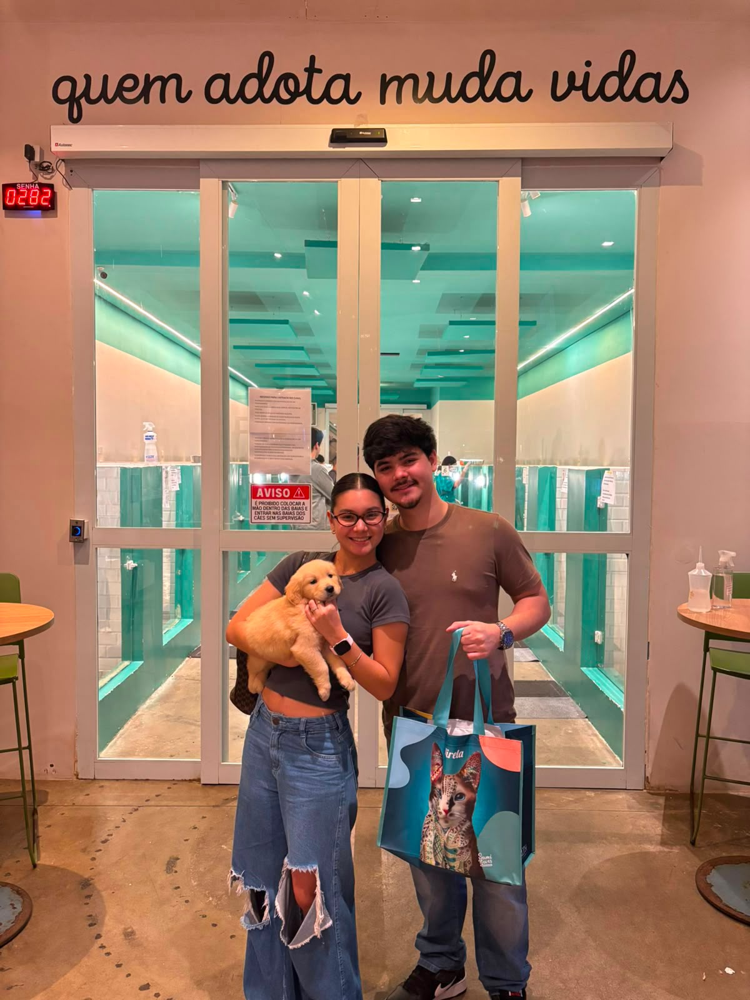

Sobre mim
Olá! Meu nome é Gabriel, tenho 19 anos e atualmente sou estudante de Sistemas de Informação na Unoeste. Sou uma pessoa que gosta muito de tecnologia, principalmente programação, inteligência artificial e empreendedorismo.
No meu tempo livre, gosto de jogar, assistir filmes e séries, passar tempo com minha namorada e aprender coisas novas relacionadas à tecnologia e ao mundo digital.
Este ano também vivi um momento muito especial: eu e minha namorada adotamos o Bolt, um Golden Retriever que passou a fazer parte da nossa rotina.
Tenho bastante interesse em desenvolver meus conhecimentos na área de tecnologia e pretendo utilizar o que estou aprendendo na faculdade para criar meus próprios projetos e crescer profissionalmente.

Escolaridade
Concluí meu ensino médio no Colégio Objetivo, em Presidente Epitácio. Atualmente, estou cursando Sistemas de Informação na Unoeste, buscando desenvolver cada vez mais meus conhecimentos em tecnologia e programação.
Meus interesses
- 💻 Tecnologia
- 🌐 Desenvolvimento Web
- 📈 Marketing Digital
- 🔎 Trafégo Pago
Habilidades
| Área | Nível |
|---|---|
| HTML | Iniciante |
| CSS | Iniciante |
| Tecnologia | Intermediário |
| Designer | Experiente |
| Gestor de Trafégo | Intermediário |
Objetivos
Quero continuar aprendendo programação e tecnologia, desenvolver projetos próprios e aumentar meus conhecimentos profissionais. E também busco crescer no mercado digital e aprender mais sobre infoprodutos e trafégo pago.